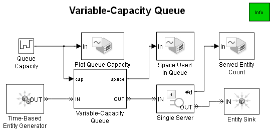
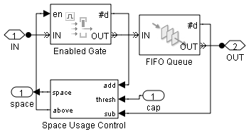

Variable-Capacity Queue
Contents
Overview
This model demonstrates how to model a queue whose capacity is parameterized.
 Fig.1 Variable Capacity Queue
Structure
In this model, the block labeled Queue Capacity (Fig. 1) produces a signal that changes during the simulation and represents the queue capacity.
The Variable-Capacity Queue subsystem contains a FIFO Queue block that has no limit on its capacity. The preceding Enabled Gate block restricts entry to the queue as necessary. The Enabled Gate block depends on the Space Usage Control subsystem, which determines whether the queue has space for another entity.
If the capacity of the queue decreases such that the queue length exceeds the new capacity, then the queue becomes full beyond its capacity and does not flush excess entities. The queue remains in this state until either the capacity increases or enough entities depart from the queue. By comparison, the Queue with Flushing Capability demo illustrates how to reduce the length of a queue immediately.